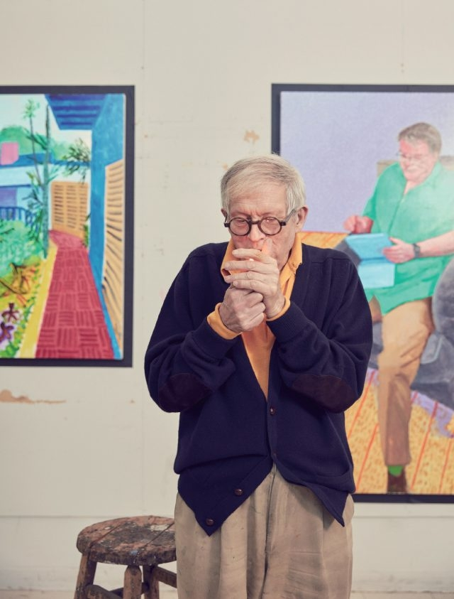

데이비드 호크니는 세계적으로 가장 영향력 있고 대중적인 예술가 중 하나다. 1937년 영국 브래드퍼드 출신으로 1960년대에는 로스앤젤레스로 이주하면서 수영장, 정물 등을 비롯하여 인물 초상화를 다수 제작하며 대중적인 명성을 얻기 시작했다. 호크니는 지난 60여 년의 긴 작업 여정 동안 작품의 형식에 구애받지 않고 다양한 스타일을 시도하며, 예술계에서 가장 널리 알려진 이미지들을 제작해왔다. 그는 우리가 세계를 바라보는 방식에 대해 끊임없이 질문을 던지며, 혁신적이고 모험적인 접근 방식으로 2차원 평면에 다채로운 그림을 그려가며 작품을 통해 다양한 가능성을 보여준다. 그의 작품은 회화, 판화, 드로잉, 사진 등 다양한 장르와 더불어 최근에는 디지털 기술을 사용하면서 폭넓은 범주를 다루고 있다.